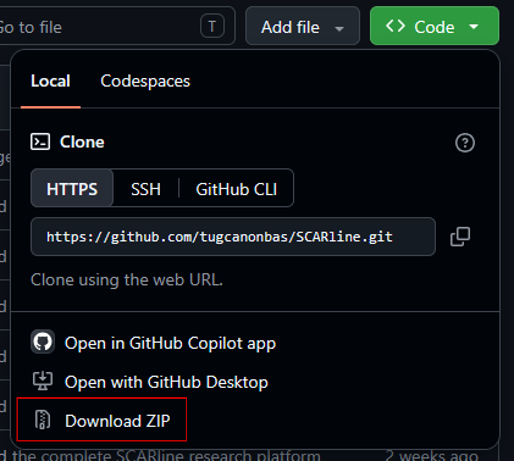

1st SCARline Workshop
On Operationalization of Driving Simulator Studies for Accessible In-Vehicle HMI Prototyping and Evaluation
Part B: YOUR TASK TODAY (BUILD YOUR OWN WIDGET)
The situation
You have just joined a research group that uses SCARline for driving simulation studies. Your first project is to understand how drivers interact with in-cabin health monitoring displays while on the road.
Health monitoring displays are meant to keep a driver informed without pulling their attention off the road.
Your task
Your team wants to know: How can a widget communicate what it needs to, at the moment it matters, without becoming a distraction?
The specifics (what's being monitored, what the alert looks like, when it triggers) are yours to decide. Treat it as your first design decision, not a constraint to work around.
In this part of the workshop, your team will:
- Define your widget idea.
- Build it — either with AI-assisted coding, coding yourself, sketching it out and having a teammate implement it.
- Validate and upload your widget to SCARline.
Once you've finished the widget, you can zip the folder and upload it here:
1. Ways to build
You don't need one person who can code. Split the work however fits your team:
- Code it yourselves: write the widget's UI directly.
- Sketch it, teammate codes it: one person sketches the layout and states, another turns it into code.
- Describe it to AI: tell an AI assistant what the widget should look like and do, in words, and let it generate the code.
- Show AI a sketch: draw or mock up the widget, hand the image to AI, and let it generate the code from that.
2. Define your widget
Before you open any tool, take five minutes to answer these questions. A clear idea is the fastest path to a working widget.
- What does your widget do? What information/interaction does it give the driver or passenger?
- When does it appear? What vehicle or simulation state should trigger it or make it change (e.g. speed, an obstacle, distance to a stop)?
- Who is it for? Is it meant for the driver, a passenger, or both and in what kind of scenario?
- What does it look like at rest, and what changes when it's triggered?
- What data does it need as input, and what should it record for later analysis?
3. Additional information
Repository:
This contains all files and a readme for more detailed and technical information.
SCARline Requirements (as of 20.09.2026):
- Node.js 22 or newer
- npm 10 or newer
- Docker
- Git (optional)
Commands
| Task | Command |
|---|---|
| Installing SCARline | Step 1:
Option A: With Git Open Git Bash and enter the following command: git clone https://github.com/tugcanonbas/SCARline.git
Option B: Without Git Navigate to the github repository, click on the “Code” button on the top and then “Download ZIP”. Unzip that folder inside your files.  Step 2: Inside your console enter the following commands one by one:
cd scarline
|
| Validating installation | scarline status |
| Running SCARline | scarline start |
| Exiting SCARline | scarline stop |
| Building your widget | Create a folder inside widgets/components/ and name it accordingly to your widget. Ensure that this folder contains a .png, .html, and .json file. |
4. Tips
- Save your work often so you don't lose progress.
- Time is limited: if you get stuck for more than a few minutes on setup or tooling, flag a facilitator rather than troubleshooting alone.
- You'll be asked to fill out a short questionnaire at the end — this is separate from this handout and helps us improve future SCARline workshops and the platform.
- This handout is yours to keep and annotate — write directly on it as you work through the template.
Questions during the workshop? Just ask — that's what we're here for.